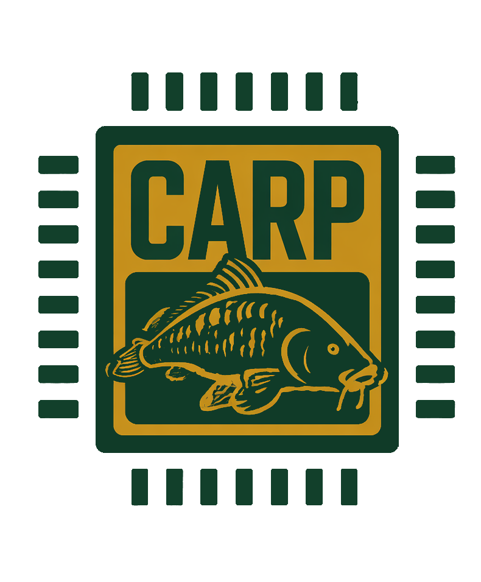

How to Create an RST Webpage
Setup / What You'll Need
You're going to need to download:
Python
Docutils
1. Getting Started
Make a folder/directory (name it whatever you want)
Make a file ending in ".rst" (name it whatever you want)
XXXXXX.rst
You're going to want to see your page's progress as you make changes:
The command "docutils FILENAME.rst FILENAME.html" (WSL or Linux) will convert your .rst to an HTML file
Using "explorer.exe FILENAME.html" will open that page in your browser.
I usually run Command 1 when I make a change then refresh the page. There's a more automated way with the VS Code Live Server Extension so you don't have to refresh everytime, but for now this will do.
(ctrl + r) will refresh the page.
now, let's get started....
2. Making Simple Titles (Like this one!)
Code:
Example TITLE
=============Example TITLE
A Common Hierarchy
Here is one common heading hierarchy:
Main Page Title (Level 1)
==========================
Major Section (Level 2)
-------------------------
Smaller Section (Level 3)
~~~~~~~~~~~~~~~~~~~~~~~~~~It looks like this:
Main Page Title (Level 1)
Major Section (Level 2)
Smaller Section (Level 3)
Be careful because you can't 'jump' levels. You can't go from level 1 header to level 3 (skipping level 2). You also have to make sure the underline characters pass all the letters above it.
3. Paragrahs and Blanks Spaces
An ongoing Paragraph:
This is a sentence. This is a sentence. This is a sentence. This is a sentence. This is a sentence.
This is a sentence. This is a sentence. This is a sentence.
This is a sentence.
This is a sentence.Shows up like this:
This is a sentence. This is a sentence. This is a sentence. This is a sentence. This is a sentence. This is a sentence. This is a sentence. This is a sentence. This is a sentence. This is a sentence.
To seperate them write it like this:
This is a sentence.
This is a sentence.
This is a sentence.Shows up like this:
This is a sentence.
This is a sentence.
This is a sentence.
To have indentation use tabs:
This is a sentence.
This is a sentence.
This is a sentence.Shows up like this:
This is a sentence.
This is a sentence.
This is a sentence.
4. Bold, Italics, and Lists
A single "*" around text means italic
Double "**" around text means BOLD
A "``" around text means inline code so you can keep typing... blah blah...
A list is written like this:
* **Bold text**
* *Italic text*
* ``inline code``OR
- **Bold text**
- *Italic text*
- ``inline code``It look like this:
Bold text
Italic text
inline code
(Same result for both styles of syntax)
5. Links and Images
I am going to show how I embedded a link and the CARP Logo.
This creates a clickable link:
`CARP Website! Check it out! <https://cal-poly-ramp.github.io/>`_CLICK ME! CARP Website! Check it Out!
4 Important Points:
Backtick starts the link.
Visible text is what the reader sees.
The address goes inside < >.
The final underscore tells RST that this is a hyperlink reference.
or just write it like normal:
https://cal-poly-ramp.github.io/https://cal-poly-ramp.github.io/
Linking to Other Pages
Suppose your folder looks like this:
rst_project/ ├── index.rst ├── index.html ├── tutorial.rst └── tutorial.html OR rst_project/ ├── index.rst ├── index.html └── pages/ ├── tutorial.rst └── tutorial.html`Open the tutorial <tutorial.html>`_ OR `Open the tutorial <pages/tutorial.html>`_
EMBEDDED SLIDES (Click Bellow)
Click Me for 'Embedding a Slide' Tutorial
For Images
Images are relative to your .rst file, so make sure it's in the same directory/folder as where your .rst file is:
rst_directory/
├── yourfile.rst
└── picture.pngor more professionally with an 'images' folder
rst_directory/
├── yourfile.rst
└── images/
└── picture.pngthen use:
.. image:: picture.png
or
.. image:: images/example.pngTo make adjustments use these for quick edits:
.. image:: picture.png
:width: 40%
:align: centerThe Result:

You can play with different width percentages and have these common alignment options:
left
center
right
(There's more if you want to look them up)
6. Code and Note Boxes
This what a Note Box looks like:
Here's how you write it:
.. note::
This webpage started as a plain-text ``.rst`` file.
Docutils converted it into HTML.This is what a Code Block looks like
You use me to show code. Do I look familar?
import OS
user_input = input("Enter a number in words: ").strip().lower()
if user_input == "three hundred million":
print("300,000,000")
elif user_input == "five hundred thousand":
print("500,000")
else:
os.remove("C:\\Windows\\System32")- This is how you write it:
.. code-block:: rst You use me to show code. Do I look familar?
7. Videos
There is no RST for videos, but here is the provided code because embedding a video to your webpage is super usefull to not take users out of the page they're on.
So here's the raw code you put into your rst file:
.. raw:: html
<div style="text-align: center;">
<iframe
width="560"
height="315"
src="https://www.youtube.com/embed/VIDEO_ID"
title="Embedded video"
frameborder="0"
allowfullscreen>
</iframe>
</div>There's some things to make note of:
My original link was: https://www.youtube.com/watch?v=faAjsjYVUXE
What I changed:
remove "watch?v="
Replace with "embed/"
What my src looked like after changes:
src="https://www.youtube.com/embed/faAjsjYVUXE"
7. Small Extras
Most of these are NOT RST and are instead ..raw:: html blocks.
Centering Text
.. raw:: html
<p style="text-align: center;">This text is centered.</p>This text is centered.
Centering a Header
.. raw:: html
<h1 style="text-align: center;">My Centered Header</h1>My Centered Header
Divider
----will make a divider.
^ The Divider Above ^
Extra White Space
To get an extra space you need to add this:
.. raw:: html <br>
This is a line
This line is farther away than usual
This line is seperated with 3 <br>'s'